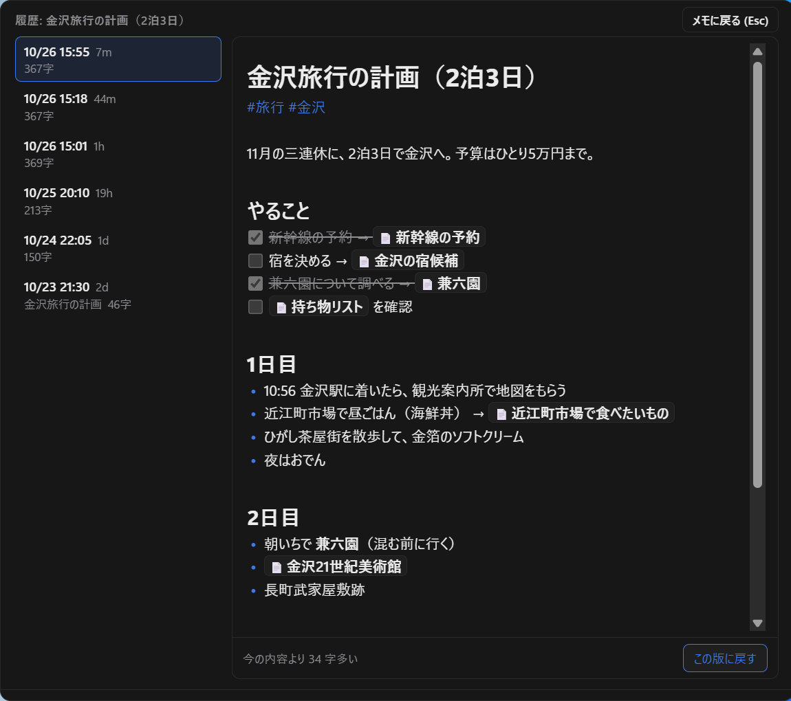
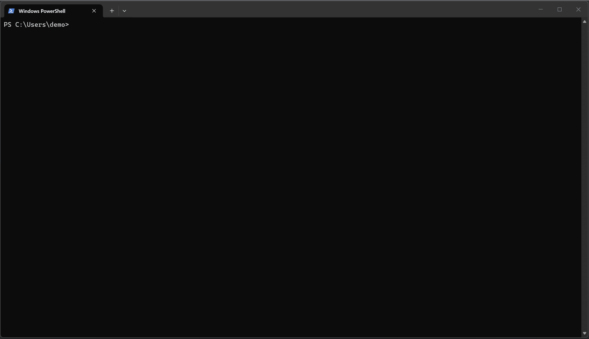
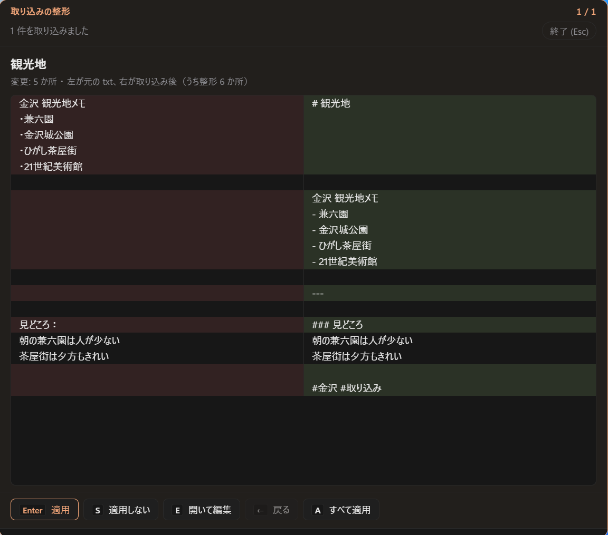

使い方ガイド
Rmemo のすべての画面の使い方をまとめたページです。アプリの中でも F1 でエディタの使い方を見られますが、 ここでは一覧・検索や整理画面、設定まで詳しく説明します。
困ったときは（Q&A）
よくある困りごとをまとめました。くわしい説明は、それぞれの「詳しくは」から読めます。
- 窓が消えてしまいました。どこに行きましたか？
- 終了したのではなく、隠れているだけです。Ctrl+N を押すか、タスクトレイの Rmemo のアイコンをクリックすると出てきます。 ほかの画面をクリックすると自動で隠れるのは、設定で止められます。 詳しくは「呼び出す・隠す」へ
- 保存ボタンはどこですか？ちゃんと保存されていますか？
- 書いている途中も、手を止めると自動で保存されます。保存場所やファイル名を決める必要はありません。 書き終えたら Ctrl+Enter で保存して、新しいメモに切り替えられます。 詳しくは「保存のしくみ」へ
- 前に書いたメモを開くには？
- エディタ上部の「一覧」ボタン（または Ctrl+Shift+F）でメモの一覧が開きます。 直前まで開いていたメモなら、新しいメモの画面の「← 前回」（Ctrl+Shift+T）で戻れます。 詳しくは「開き方と検索」へ
- 今のメモを閉じて、新しいメモを書きたい
- エディタ上部の「＋ 新規」を押すか、Esc を押します。開いていたメモは保存されています。 詳しくは「新しいメモ・前回のメモ」へ
- 「保管」と「一時」は何が違いますか？
- あとで読み返すメモは「保管」、電話番号や一時的なコピーのような使い捨てのメモは「一時」です。Ctrl+L で切り替えます。 詳しくは「保管と一時」へ
- 「まもなく期限切れ」と出ました。メモは消えてしまいますか？
- 消えません。古くなった一時のメモに付く印です。一覧の「整理」ボタンから、1 件ずつ残すか捨てるかを決められます。 詳しくは「一時のメモを整理する」へ
- メモを消してしまいました。元に戻せますか？
- Rmemo で削除したメモは、Windows のごみ箱に入ります。ごみ箱から「元に戻す」で復元できます。 詳しくは「削除と復元」へ
- メモの中身を間違えて消した・書き換えてしまいました
- メモを開いて、上部の「履歴」（Ctrl+Shift+H）から前の版に戻せます。 詳しくは「履歴（前の版に戻す）」へ
- Ctrl+N がほかのアプリの操作とかぶります
- 設定（Ctrl+,）の「キー設定」タブで、呼び出すキーを変えられます。 詳しくは「設定」へ
- 見出しにしたいのに、タグになってしまいます
-
#のあとに空白を入れると見出し、空白を入れずに続けるとタグになります。# 見出しと#タグの違いです。 詳しくは「見出しとタグの違い」へ - メモのファイルはどこに保存されていますか？
-
ドキュメント\Rmemoの中のkeep（保管）とscratch（一時）フォルダに、1 メモ = 1 つの.mdファイルで保存されています。 詳しくは「保存場所」へ - 今まで Windows のメモ帳で書いていたメモを移したい
-
設定（Ctrl+,）の「取り込み」タブで、
.txtの入ったフォルダかファイルを選ぶと、まとめて Rmemo のメモにできます。文字化けせず、書いた頃の日付のまま一覧に並びます。元の.txtはそのまま残ります。 詳しくは「設定」へ - 画面を暗く（明るく）したい
- 設定の「ウィンドウ」タブの「テーマ」で、ライトとダークを選べます。選ぶまでは Windows の設定に合わせています。 詳しくは「設定」へ
- ほかの PC と同じメモを使いたい
- メモの保存フォルダを Google ドライブなどのクラウドの中にすると、複数の PC で同期できます。 詳しくは「複数の PC で同期する」へ
- 文字が小さくて読みにくい
- Ctrl++ / Ctrl+-、または Ctrl+マウスホイールで大きさを変えられます。 詳しくは「文字の大きさ」へ
基本の使い方
呼び出す・隠す
Rmemo はタスクトレイに常駐していて、どの画面にいても Ctrl+N で入力窓が開きます。 もう一度 Ctrl+N を押すと隠れます。
- 隠れるタイミング：Ctrl+N を押したとき、新しいメモの画面で Esc を押したとき、ほかの画面をクリックしたとき。
- ほかの画面をクリックしても隠したくないときは、設定の「ウィンドウ」タブで「ほかの画面をクリックしても開いたままにする」をオンにします。調べものをしながら書きたいときに便利です。
- 窓を動かす：エディタの一番上の帯（「新規メモ」「編集中: …」と書いてあるところ）をドラッグします。
- 窓の大きさを変える：窓のふちをドラッグします。位置と大きさは次回も覚えています。
- 窓は、ほかのアプリの上に常に表示されます。
隠れている間もアプリは動いています。完全に終了したいときは、タスクトレイのメニューから「終了」を選びます。
画面の種類
Rmemo には、次の 6 つの画面があります。エディタ以外の画面では、Esc で 1 つ前の画面に戻れます。
| 画面 | 開き方 | できること |
|---|---|---|
| エディタ | Ctrl+N | メモを書く・編集する |
| 一覧・検索 | 「一覧」ボタン / Ctrl+Shift+F | メモを探す・開く・ピン留め・削除 |
| 一時のメモの整理 | 一覧・検索の「整理」ボタン | 古い一時のメモを 1 件ずつ片づける |
| 設定 | 右上の ⚙ / Ctrl+, | 保存フォルダ・テーマと色・ウィンドウ・キー設定・テキストファイルの取り込み |
| 履歴 | メモを開いて上部の「履歴」 / Ctrl+Shift+H | そのメモの前の版を見る・戻す |
| 使い方 | エディタの「?」ボタン / F1 | エディタの機能を入力例つきで確認 |
タスクトレイ
画面右下のタスクトレイに Rmemo のアイコンがあります（隠れている場合は「^」を押すと出てきます）。
- 左クリック：窓を出す・隠す
- 右クリック：メニューが開きます
- 「Rmemo を開く」：窓を出す
- 「メモのフォルダを開く」：メモの保存フォルダをエクスプローラーで開く
- 「終了」：Rmemo を完全に終了する
メモを書く（エディタ）
エディタでは、Markdown（マークダウン）という書き方で、見出しやリストを書いたそばから整えて表示します。 ファイルにはいつでも、入力した文字のまま保存されます。
保存のしくみ
- 自動保存：書いている途中も、手を止めると自動で保存されます。保存場所やファイル名を決める必要はありません。
- Ctrl+S：その場で途中保存します（画面下に「途中保存しました」と出ます）。
- Ctrl+Enter：保存して、新しいメモに切り替えます（窓は開いたままです）。続けて次のメモを書けます。
- Ctrl+Shift+Enter：保存して、窓を隠します。メモは開いたままなので、次に呼び出したときに続きから書けます。
- タイトルとファイル名：1 行目がメモのタイトルになり、そのままファイル名になります。タイトルを書き換えると、ファイル名も自動で変わります。
- 何も書かずに閉じたメモは保存されません。書いたメモを全部消すと、そのメモはなくなります。
新しいメモ・前回のメモ
- 新しいメモを書く：エディタ上部の「＋ 新規」を押すか、Esc を押します。開いていたメモは保存されてから閉じます。
- 前回のメモに戻る：新しいメモの画面では、上部に「← 前回: メモの名前」が出ます。クリックするか Ctrl+Shift+T で、直前まで開いていたメモに戻れます。アプリを再起動しても覚えています。
履歴（前の版に戻す）
メモを編集すると、10 分ごとに直前の内容が「版」として残ります。タグやリンクの名前の一括変更、取り込みの整形の前にも残ります。 間違えて消したり書き換えたりしても、前の版に戻せます。

- 開き方：メモを開いて、上部の「履歴」を押すか、Ctrl+Shift+H。
- 左に残っている版が新しい順に並びます（↑ / ↓ で選べます）。右にその版の中身が表示されます。
- 「この版に戻す」を押すと、エディタの中身がその版に置き換わります。戻す前の内容も履歴に残るので、戻したことも取り消せます。
- 1 つのメモにつき 50 版まで、60 日分を残します。
履歴はこの PC の中（%APPDATA%\Rmemo\history）にだけ保存されます。同期している別の PC には送られません。
保管と一時
メモは 2 種類に分けて保存されます。画面下の「保管 / 一時」スイッチか、Ctrl+L で切り替えます。
| 向いているメモ | 古くなると | |
|---|---|---|
| 保管（残す） | 手順書、アイデア、調べたことのまとめなど、あとで読み返すメモ | 何も起きません |
| 一時（使い捨て） | 電話番号、買い物リスト、一時的なコピーなど、すぐいらなくなるメモ | 「まもなく期限切れ」の印が付きます（消えはしません） |
今どちらのメモを書いているかは、上部のタイトルや窓の枠の色でも分かります（色の組み合わせは 設定 で選べます）。前回選んだほうを覚えているので、普段使うほうを選んでおけば、毎回切り替える必要はありません。 古くなった一時のメモは 整理画面 でまとめて片づけられます。
見出し
- 行頭で
#と空白を打つと見出し 1、##で見出し 2… と、#の数で大きさが変わります（4 つまで）。 - Ctrl+Alt+1〜4 でも変えられます。同じキーをもう一度押すか、Ctrl+Alt+0、見出しの先頭で Backspace を押すと本文に戻ります。
- 日本語入力のままでも OK：
＃＃（全角の ＃ と全角スペース）と打つと、自動で##に直って見出しになります。 - 見出しで折りたたむ：見出しにマウスを乗せると左に ▾ が出ます。クリックすると、その見出しの下（次の同じ大きさ以上の見出しまで）を隠せます。Ctrl+Shift+[ / ] でたたむ・開く、Ctrl+Alt+[ / ] で全部をたたむ・開くこともできます。
見出しとタグの違い
# のすぐあとに空白があるかどうかで、見出しになるかタグになるかが決まります。
| 入力 | 結果 |
|---|---|
# 買い物（# のあとに空白） | 見出し |
#買い物（空白なし） | タグ |
文字の飾り
| 飾り | 入力 | キー |
|---|---|---|
| 太字 | **太字** | Ctrl+B |
| 斜体 | *斜体* | Ctrl+I |
| インラインコード | `npm install` | Ctrl+E |
| 取り消し線 | ~~取り消し~~ | — |
文字を選んでキーを押すと飾りが付き、もう一度押すと外れます。何も選ばずに押すと、その飾りで打ち始められます。
リスト・チェックボックス
- 箇条書き：行頭で
-と空白を打ちます。Enter で次の項目、空の項目で Enter を押すとリストが終わります。 - 番号付き：
1.と空白で始めます。Enter で次の番号が自動で入ります。 - チェックボックス：
- [ ]で始めます。チェックボックスをクリックすると完了になり、取り消し線が付きます。 - 字下げ：リストの中で Tab / Shift+Tab を押すと、入れ子にしたり戻したりできます。
引用・区切り線・コード
- 引用：行頭で
>と空白。Enter で引用が続き、空の行で Enter を押すと終わります。 - 区切り線：行に
---と打ちます。 -
コードブロック：
```のあとに言語名（js、pythonなど）を書くと、色分けして表示します。 言語名を書かずに閉じると、中身から言語を推測して自動で付けます。右上の「コピー」で中身をコピーでき、言語名をクリックすると言語を変えられます。
画像
- 貼り付け：スクリーンショットを Ctrl+V で貼るか、画像ファイルをドラッグ＆ドロップします。
- 大きさを変える：画像の右下の □ をドラッグするか、右上の「小・中・大・原寸」を押します。ダブルクリックで原寸に戻ります。
- 消す：画像の行で Backspace を 1 回押すと、画像ごと消えます。
- 画像はメモの保存フォルダの
assetsに WebP 形式で保存されます。メモから消した画像は、しばらくすると自動でごみ箱に移ります。
Web へのリンク
- リンクを付ける：文字を選んで Ctrl+K を押し、URL を入力します。
- URL を貼ってリンクにする：文字を選んだ状態で URL を Ctrl+V すると、選んだ文字がそのままリンクになります。
- リンクを開く：Ctrl+クリックでブラウザが開きます。
https://…をそのまま書いた場合も同じです。 - 直す・外す：リンクをクリックすると出る「編集」（またはリンクの上で Ctrl+K）で、表示テキストや URL を変えたり、リンクを外したりできます。
メモ同士のリンク
[[と打つと、ほかのメモのタイトルの候補が出ます。選ぶと[[メモの名前]]が入り、📄 付きの囲みで表示されます。- クリックすると、そのメモが開きます。まだないメモの名前は点線で表示され、クリックするとそのタイトルで新しいメモを作れます。
- 名前を直す：矢印キーでリンクの端までカーソルを進めると
[[メモの名前]]の形に戻り、そのまま中に入って名前を直せます。 - 参照元：ほかのメモからリンクされているメモには、下に「← 参照元」としてリンク元のメモが表示されます。
- 名前を変えてもリンクが切れない：メモのタイトルを変えると、ほかのメモの
[[古い名前]]も、そのメモを閉じたときに新しい名前へ書き換わります。
タグ
- メモの中に
#仕事のように書くと、そのメモにタグが付きます。1 つのメモに複数のタグを付けられます。 #を打つと、今までに使ったタグの候補が出ます。- タグを Ctrl+クリックすると、そのタグのメモを一覧・検索画面で探せます。
- タグの一覧や名前の変更は、一覧・検索画面 でできます。
1 行目にタグを並べて #用語集 #Rust のように書いておくと、一覧でもひと目で分類が分かって便利です。
目次
メモに見出しを作ると、右側に目次が出ます。クリックするとその見出しへ移動します。 窓の幅が狭いときは細い線になり、マウスを乗せると開きます。
便利な編集機能
| やりたいこと | キー |
|---|---|
| カーソルを追加する | Alt+クリック |
| 同じ語を次々に選ぶ | Ctrl+D |
| 同じ語をすべて選ぶ | Ctrl+Shift+L |
| 縦に選ぶ | Shift+Alt+ドラッグ |
| カーソルを 1 つに戻す | Esc |
| 行を上下に移動 | Alt+↑ / ↓ |
| 行を上下に複製 | Shift+Alt+↑ / ↓ |
| 字下げ・字上げ | Ctrl+] / Ctrl+[ |
| 今日の日付を入れる | Ctrl+:（例: 2026-10-21） |
| 日付と時刻を入れる | Ctrl+Shift+:（例: 2026-10-21 14:05） |
| メモの中を検索 | Ctrl+F |
| メモの中で置換 | Ctrl+H |
複数カーソルのときは、行の移動や字下げもすべての行に効きます。画面下には文字数（改行は数えません）が出て、文字を選ぶと選択中の文字数も出ます。
文字の大きさ
Ctrl++ で大きく、Ctrl+- で小さく、Ctrl+0 で元の大きさに戻ります。 Ctrl+マウスホイールでも変えられます。大きさは次回も覚えています。
メモを探す（一覧・検索）

開き方と検索
- 開く：エディタ上部の「一覧」ボタンか、Ctrl+Shift+F。もう一度 Ctrl+Shift+F か、右上の「メモに戻る」、Esc でエディタに戻ります。
- 検索：上の検索欄に入力すると、1 文字打つごとに絞り込まれます。タイトルだけでなく、本文の中身（リストの奥に書いた言葉も）すべてが対象です。
- 複数の言葉で探す：空白で区切ると、すべての言葉を含むメモだけに絞り込みます（例:
会議 予算）。 - タグで探す：
#仕事のように入力すると、そのタグのメモが見つかります。 - 書き方の違いは気にしなくていい：ひらがなとカタカナ、全角と半角、大文字と小文字は区別しません。ローマ字で打っても見つかります（
りんご/リンゴ/ringoのどれでも「リンゴ」が見つかります）。 - 画像の中の文字：貼ったスクリーンショットや写真の中の文字でも見つかります。画像の中だけで見つかったメモは、抜粋の頭に「画像」と付きます。文字の読み取りは Windows に組み込まれた機能で、PC の中だけで行います。貼ってから検索できるようになるまで、少しかかることがあります。
- 見つかった言葉は、タイトルと本文の抜粋で色付きで表示されます。
- 絞り込み：右上の「すべて / 保管 / 一時」で、表示するメモの種類を選べます。
- 画面の一番下に、表示中のメモの件数が出ます。
キーボードだけでも操作できます。
| キー | 動作 |
|---|---|
| ↑ / ↓ | 選ぶメモを移動 |
| Enter | 選んでいるメモを開く |
| Ctrl+L | 選んでいるメモを 保管 ⇔ 一時 に移動 |
| Ctrl+F | 検索欄に戻る |
一覧の見方
メモ 1 件ごとに、次の情報が表示されます。クリックするとそのメモが開きます。

- 📌：ピン留めしたメモ（一覧の一番上に並びます）
- タイトル：メモの 1 行目
- まもなく期限切れ：古くなった一時のメモに付く印（整理する）
- 文字数・更新日時：右上に表示（「now」は 1 分以内、「6m」は 6 分前、「3h」は 3 時間前、「2d」は 2 日前。1 週間より前は日付）
- 本文の抜粋：検索中は、見つかった言葉のまわりが表示されます
- タグ：クリックするとそのタグで絞り込みます
- ボタン：「ピン留め」「→ 一時（または → 保管）」「削除」
ピン留め
よく使うメモは「ピン留め」を押すと、一覧の一番上に固定されます。外すときは「ピン解除」です。 ピン留めの情報はメモの保存フォルダに保存されるので、同期 している別の PC にも反映されます。
保管 / 一時 の移動
「→ 一時」「→ 保管」で、メモの種類をあとから変えられます。メモを開かなくても、一覧からそのまま移動できます。
削除と復元
- 「削除」を押すと「もう一度クリックでゴミ箱へ」に変わります。3 秒以内にもう一度押すと削除されます（押し間違いを防ぐためです）。
- 削除したメモは Windows のごみ箱 に入ります。デスクトップのごみ箱を開き、メモのファイルを右クリックして「元に戻す」を選ぶと復元できます。
タグの一覧と名前の変更
- 検索欄が空のとき、検索欄の下にすべてのタグが使われている数の多い順に並びます。クリックすると、そのタグのメモに絞り込みます。
- 最初はよく使う 10 個だけが表示されます。「+数字」で全部表示、「たたむ」で戻ります。
- タグの名前を変える：右端の「編集」を押してからタグをクリックし、新しい名前を入れて Enter。 そのタグが付いたすべてのメモが書き換わります。すでにあるタグの名前にすると、2 つのタグが 1 つにまとまります。 Esc でやめられます。
一時のメモを整理する
古くなった一時のメモを 1 件ずつ表示して、残すか捨てるかを決めていく画面です。 一時のメモはいつのまにか溜まりがちなので、ときどきここで片づけると一覧がすっきりします。

開き方
一覧・検索画面 の右上にある「整理」ボタンを押します。 ボタンの横の数字は、期限切れの一時のメモの件数です。
「期限切れ」とは
作ってから一定の日数（はじめは 14 日）がたった一時のメモに「期限切れ」の印が付きます。日数は 設定 の「期限切れの目安（日数）」で変えられます。 印が付くだけで、メモが勝手に消えることはありません。
操作
画面上部の「期限切れ」「すべての一時メモ」で、整理する範囲を選びます（期限切れのメモがなければ、すべての一時のメモが対象になります）。期限切れのものから、作った日が古い順に表示されます。
| ボタン | キー | 動作 |
|---|---|---|
| 保管に残す | K | 保管に移して、次のメモへ |
| ゴミ箱へ | D / Delete | Windows のごみ箱に送って、次のメモへ |
| あとで | S / → | 今は決めずに、次のメモへ |
| 開いて編集 | E / Enter | そのメモをエディタで開く |
| 戻る | ← | 1 つ前のメモに戻る（「保管に残す」は取り消されます） |
| 終了 | Esc | 一覧・検索画面に戻る |
ゴミ箱に送ったメモは、この画面の「戻る」では戻せません。Windows のごみ箱から復元してください。
最後まで終わると「整理完了」と、保管・ゴミ箱・あとでの件数が出ます。「「あとで」の◯件をもう一度」で、保留にしたメモだけをもう一度整理できます。
設定
画面右上の ⚙ か、Ctrl+, で開きます。上のタブで項目を切り替えます。変更したら、画面の下の「保存」を押してください。保存しないまま閉じようとすると、保存するかどうかを確認されます。
| タブ | 項目 | 説明 | はじめの値 |
|---|---|---|---|
| 一般 | メモの保存フォルダ | メモを保存する場所。変えると、新しいフォルダに keep（保管）と scratch（一時）が作られます（今までのメモは自動では移動しません）。「エクスプローラーで開く」でフォルダが開きます | ドキュメント\Rmemo |
| 一般 | 期限切れの目安（日数） | 作ってから何日たった一時のメモに「期限切れ」の印を付けるか | 14 日 |
| 一般 | インデント幅 | インデント（Ctrl+] / Ctrl+[）で増減する空白の数 | 4 |
| ウィンドウ | テーマ | ライトかダークか。選ぶまでは Windows の設定に合わせます | Windows に合わせる |
| ウィンドウ | 保管 / 一時 の色 | 保管と一時の色の組み合わせ。「オレンジ / アクア」「オレンジ / ミント」「レモン / スカイ」「イエロー / ミント」から選びます。ライトでは、白の上で見やすいように黄色がローズ（赤）になります | オレンジ / アクア |
| ウィンドウ | Windows の起動時に自動で起動する | PC にサインインしたとき、タスクトレイに常駐した状態で起動します | オン |
| ウィンドウ | ほかの画面をクリックしても開いたままにする | オフのときは、ほかの画面をクリックすると Rmemo が隠れます | オフ |
| キー設定 | 呼び出しのホットキー | どのアプリからでも Rmemo を呼び出すキー | Ctrl+N |
| キー設定 | 各ショートカット | 保存・検索・書式・行の移動などのキー。欄を押してから新しいキーを押すと変わります。× でなし、↺ で初期値に戻ります。ほかと重なると注意が出ます | このガイドに書いてあるキー |
| 取り込み | テキストファイルの取り込み | 今まで書きためた .txt を、まとめて保管のメモにします。フォルダごと（サブフォルダも含む）か、ファイルを選んで取り込めます。文字化けせず、元のファイルの日付のまま並びます。取り込んだあと、1 件ずつ Markdown への整形を確認できます。元の .txt は残ります | — |
「取り込み」タブで .txt を取り込むと、続けて 1 件ずつ整形を確認する画面になります。左が元の txt、右が取り込んだあとのメモで、変わったところに色が付きます。

メモのファイルと同期
保存場所
メモは、はじめは次のフォルダに保存されます。
| 場所 | 中身 |
|---|---|
ドキュメント\Rmemo\keep | 保管のメモ |
ドキュメント\Rmemo\scratch | 一時のメモ |
ドキュメント\Rmemo\assets | メモに貼った画像 |
ドキュメント\Rmemo\.rmemo | ピン留めの情報 |
メモは 1 件ごとに、タイトル.md という名前のテキストファイルです。同じタイトルのメモがあると、タイトル (2).md のように番号が付きます。
アンインストールしても、このフォルダは消えません。
ほかのアプリで編集する
メモはただのテキストファイルなので、メモ帳や VS Code でも開いて編集できます。ほかのアプリで書き換えたり、フォルダに .md ファイルを追加したりすると、Rmemo の一覧にも自動で反映されます。
Rmemo で開いて編集中のメモが、ほかのアプリでも書き換えられた場合は、どちらの内容も失われないように、ほかのアプリ側の内容を別のメモとして残します。
複数の PC で同期する
Rmemo 自体には同期の機能はありませんが、メモの保存フォルダをクラウドの中にすれば、複数の PC で同じメモを使えます。Google ドライブの場合の手順です。
- それぞれの PC に「Google ドライブ パソコン版」をインストールし、同じアカウントでログインします。
- Google ドライブの設定で、マイドライブの同期を「ファイルをミラーリングする」にします（「ストリーミング」だと、ほかの PC の変更に気づきにくくなります）。
マイドライブの中にRmemoフォルダを作ります。- Rmemo の 設定 で、「メモの保存フォルダ」をそのフォルダ（例:
G:\マイドライブ\Rmemo）にして保存します。 - 今までのメモを使いたい場合は、元のフォルダの
keepとscratchの中身を、新しいフォルダの同じ名前のフォルダにコピーして、Rmemo を再起動します。
2 台目以降の PC でも、同じフォルダを「メモの保存フォルダ」に設定するだけです。くわしい手順や、2 台で同時に同じメモを編集したときの動きは 同期の手順書 にあります。
アップデート・アンインストール
- Microsoft Store 版：アップデートは Store が自動で行います。
- インストーラー版（setup.exe）：新しいバージョンが出ると、画面の一番下に「v◯.◯.◯ に更新」ボタンが出ます。押すと、ダウンロードからインストール、再起動まで自動で進みます。
- アンインストール：Windows の「設定」→「アプリ」から Rmemo をアンインストールします。メモのフォルダは消えずに残ります。
- インストーラー版と Store 版を両方入れると、片方しか起動しません。乗り換えるときは、先に使っていたほうをアンインストールしてください。
ショートカット一覧
よく使うショートカットを、VS Code や Notion などおなじみのアプリに合わせています。ここに書いてあるのは初期値で、設定の「キー設定」タブで変えられます。
どこでも
| Rmemo を出す・隠す | Ctrl+N（設定で変更可） |
| 一覧・検索 | Ctrl+Shift+F |
| 設定 | Ctrl+, |
| 使い方 | F1 |
| 前の画面に戻る | Esc |
| 文字の大きさ | Ctrl++ / - / 0、Ctrl+ホイール |
エディタ
| 途中保存 | Ctrl+S |
| 保存して新しいメモへ | Ctrl+Enter |
| 保存して窓を隠す | Ctrl+Shift+Enter |
| 新しいメモ | Esc |
| 前回のメモに戻る | Ctrl+Shift+T |
| このメモの履歴 | Ctrl+Shift+H |
| 保管 / 一時 を切り替え | Ctrl+L |
| 見出し 1〜4 / 本文 | Ctrl+Alt+1〜4 / 0 |
| 太字・斜体・インラインコード | Ctrl+B / I / E |
| リンク | Ctrl+K |
| リンク・タグを開く | Ctrl+クリック |
| 見出しをたたむ・開く | Ctrl+Shift+[ / ] |
| 全部たたむ・開く | Ctrl+Alt+[ / ] |
| カーソルを追加 | Alt+クリック |
| 同じ語を次々に選ぶ / すべて選ぶ | Ctrl+D / Ctrl+Shift+L |
| 行を移動 / 複製 | Alt+↑↓ / Shift+Alt+↑↓ |
| 字下げ・字上げ | Ctrl+] / [（リストでは Tab / Shift+Tab） |
| 日付 / 日付と時刻 | Ctrl+: / Ctrl+Shift+: |
| メモ内の検索 / 置換 | Ctrl+F / Ctrl+H |
一覧・検索
| 選ぶメモを移動 / 開く | ↑ ↓ / Enter |
| 保管 ⇔ 一時 に移動 | Ctrl+L |
| 検索欄に戻る | Ctrl+F |
一時のメモの整理
| 保管に残す / ゴミ箱へ / あとで | K / D / S |
| 開いて編集 / 戻る | E / ← |